Estudo Internacional de Progresso em Leitura
Escola Municipal Celestina Scolaro Foggiatto
Bem-vindo ao simulado PIRLS! Para começar, informe seu nome, série e turma abaixo.
Relatório de desempenho dos alunos no Simulado PIRLS
Melhores Alunos
Top 3 com maior número de acertos no simulado
Ranking de Alunos
Todos os alunos ordenados por pontuação
Desempenho por Turma
Ranking das turmas ordenado pela média de acertos nas 11 questões objetivas
recontado por Elaine L. Lindy, ilustrado por Jennifer Moher
O Imperador da China anunciou um concurso para escolher o próximo herdeiro do trono. O Imperador era velho e não tinha filhos. Como adorava plantas, anunciou que qualquer criança que quisesse ser imperador devia vir ao palácio para receber uma semente real. A criança que conseguisse mostrar os melhores resultados em seis meses ganharia o concurso e seria o próximo imperador.
Podes imaginar o entusiasmo! No dia em que as sementes iam ser distribuídas, filas de crianças esperançosas encheram o palácio. Cada criança regressou a casa segurando uma oportunidade preciosa.
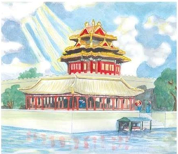
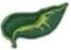
🍃 E assim aconteceu com o jovem Jun. Ele já era considerado como o melhor jardineiro da aldeia. Os seus vizinhos adoravam partilhar os melões, as couves e as ervilhas do jardim dele. Cuidadosamente, Jun levou a semente do Imperador para casa, mantendo-a segura nas suas mãos para ela não cair, mas não tão apertada que a fosse esmagar.
🌸 Em casa, ele espalhou pedras grandes no fundo de um vaso de flores, tapou as pedras com seixos e depois encheu o vaso com terra boa e úmida. Enterrou a semente alguns centímetros abaixo da superfície e cobriu-a com terra fofa. Durante os dias seguintes, Jun, tal como todas as crianças que ele conhecia, regou o seu vaso diariamente e aguardou que a primeira folha aparecesse à superfície.
Cheun foi a primeira criança da aldeia do Jun a anunciar que a sua semente tinha germinado. Isto foi recebido com gritos de felicitação. Ele gabava-se de que iria ser certamente o próximo imperador e praticou as suas habilidades reais comandando as crianças mais novas. Ming foi a próxima criança a quem nasceu uma pequena planta no seu vaso, a seguir foi Wong. Jun estava intrigado – nenhum destes rapazes sabia cultivar plantas tão bem quanto ele! Mas a semente do Jun não crescia.
Por toda a aldeia, surgiram rebentos nos vasos. As crianças construíram vedações à volta dos vasos e protegeram-nos de quem os pudesse tombar acidentalmente – ou não tão acidentalmente. Em breve, dezenas de rebentos alongavam as suas primeiras folhas nos vasos pela aldeia de Jun. Mas a semente de Jun não crescia. Ele estava confuso — O que estava errado? — Jun tornou a plantar cuidadosamente a sua semente num outro vaso com a melhor e mais rica terra negra do seu jardim. Ele esmigalhou cada torrão de terra em pequenas partículas. Enterrou cuidadosamente a semente e manteve a superfície húmida e vigiou o vaso diariamente. Mesmo assim, a semente de Jun não crescia.
Caules fortes e poderosos emergiram rapidamente nos vasos das outras crianças da aldeia. Jun estava triste e derrotado. As outras crianças riam-se dele.
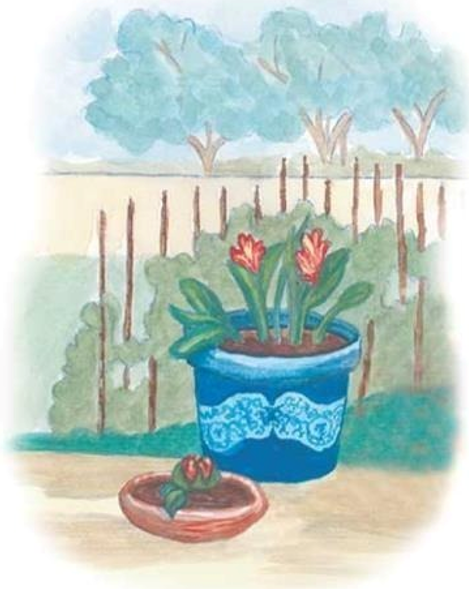
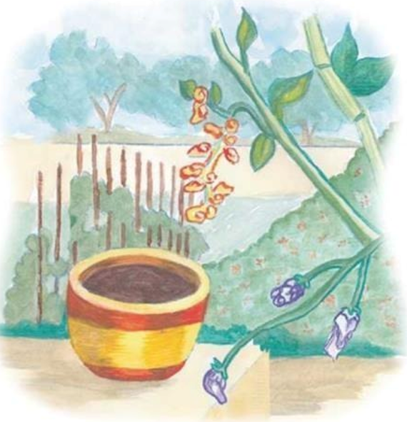
Passaram-se seis meses. Aproximava-se o dia em que as crianças deviam trazer as suas plantas ao palácio para avaliação. Elas limparam os vasos até brilharem, enxugaram cuidadosamente as grandes folhas e vestiram as suas melhores roupas. Alguns pais acompanharam os seus filhos enquanto eles levavam o vaso para o palácio, mantendo a planta direita para evitar que se virasse.
— O que hei de fazer? – lamentou-se Jun a seus pais enquanto observava pela janela as outras crianças a prepararem-se para o seu regresso triunfal ao palácio. – A minha semente não cresceu! O meu vaso está vazio!
— Tu fizeste o melhor que podias – disse o pai dele, abanando a cabeça.
— Jun, leva o teu vaso ao Imperador – disse a mãe dele – é o melhor que tens a fazer.
Envergonhado, Jun levou o seu vaso vazio pela estrada até ao palácio, enquanto crianças cheias de alegria, levando vasos a balançar com plantas enormes, caminhavam à sua direita e à sua esquerda.
No palácio, as crianças formaram filas com as plantas florescentes e esperaram a decisão. O Imperador, envolvido no seu manto de seda, galgou a linha dos concorrentes esperançosos, observando cada planta com um franzir de sobrancelhas. Quando chegou a Jun, ficou mais carrancudo e disse: — O que é isto? Trouxeste-me um vaso vazio?
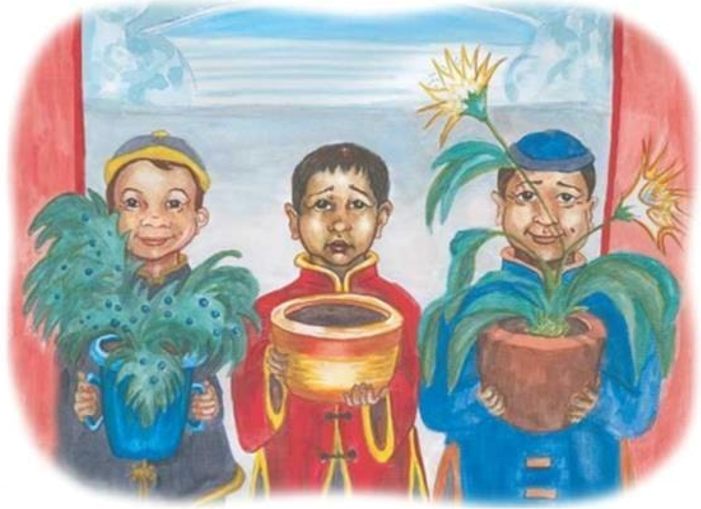
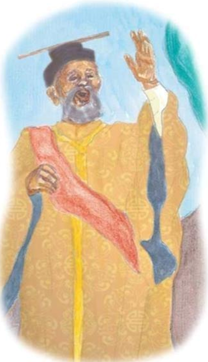
Pouco faltou para Jun desatar a chorar. – Por favor, Majestade – disse Jun – Eu fiz o meu melhor. Plantei a sua semente na melhor terra que encontrei, mantive-a húmida e vigiei-a todos os dias. Como a semente não crescia, tornei a plantá-la em terra nova. Mas ela simplesmente não cresceu. Desculpe. – Jun baixou a cabeça.
— Hmm – exclamou o Imperador. Virando-se para que todos o pudessem ouvir, ele disse com voz de trovão: — Não sei onde as outras crianças foram buscar as sementes delas. Nada podia crescer das sementes que vos dei, porque essas sementes tinham sido cozidas!
E o Imperador sorriu para Jun.
Os polvos são animais marinhos, têm um corpo arredondado, olhos salientes e oito braços compridos. Têm braços muito fortes, com fileiras de ventosas muito potentes. Vivem em todos os oceanos do mundo, mas gostam especialmente de águas mornas e tropicais. Ficam muitas vezes no fundo do oceano, onde conseguem encontrar os seus alimentos preferidos. Gostam de comer caranguejos, camarão e pequenos peixes. Capturam as suas presas com as ventosas e depois levam a comida à boca.
Os polvos vivem habitualmente sozinhos em esconderijos construídos nas rochas. Por vezes, os polvos chegam mesmo a fazer nos seus esconderijos «portas» de rocha que podem fechar-se para os manter em segurança.
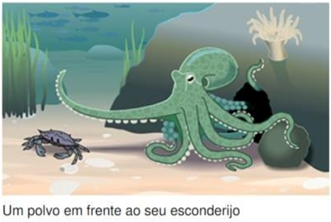
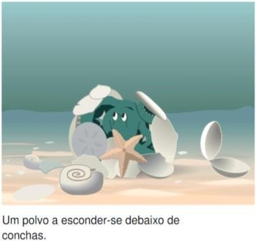
Os polvos conseguem esconder-se escorregando por fendas nas rochas ou no coral. Na verdade, não têm nenhum osso e o seu corpo é mole. Sem ossos, os polvos podem deslizar como a água e fazer com que o seu corpo todo caiba em espaços muito pequenos. São conhecidos por aparecerem em lugares onde ninguém está à espera. Já houve polvos que foram encontrados dentro de conchas, de equipamento de cientistas e de garrafas deixadas no mar.
Às vezes, os polvos chegam a utilizar conchas para se esconderem. Apanham as conchas com as suas ventosas. Depois, enrolam os braços à volta do corpo com as conchas viradas para fora. Ao passarem, os predadores ficam a pensar que o polvo não passa de um monte de conchas velhas.
Aprender a fazer coisas
Um polvo chamado Frieda vivia num aquário na Alemanha. Depois de ver os seus tratadores a desenroscarem os frascos que continham a sua comida, também ela aprendeu a abrir os frascos. Pressionando a tampa contra o seu corpo e agarrando o frasco com os braços, torcia o seu corpo sem ossos para desenroscar a tampa. Só abria os frascos que continham a sua comida preferida, como caranguejos e camarão. Ela ignorava os frascos que tinham o mesmo peixe de sempre.
Num centro marinho nos Estados Unidos, um polvo chamado Squirt aprendeu a pintar. Conseguia fazer isso puxando alavancas que lançavam a tinta para uma tela. A «arte» era depois vendida para conseguir dinheiro para ajudar na manutenção do tanque do polvo.
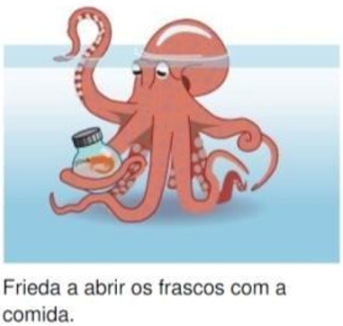
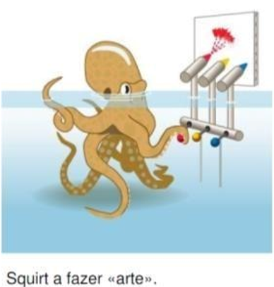
Manter os polvos ocupados
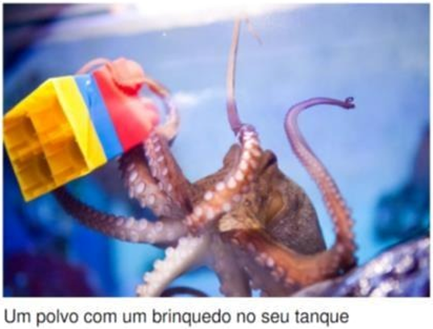
As pessoas gostam de ver os polvos em aquários que mostrem os seus ambientes naturais. No entanto, os polvos aborrecem-se facilmente, e, por isso, os funcionários do aquário têm de inventar maneiras de manter os seus polvos ocupados. Dão aos polvos, por exemplo, puzzles e brinquedos que podem ser desmontados.
Num aquário nos Estados Unidos, um polvo chamado Sammy gostava de brincar com uma bola em plástico que se conseguia enroscar ao rodar as duas metades. O seu tratador punha comida dentro da bola e Sammy abria a bola e depois voltava a enroscá-la quando acabava de comer.
Reconhecer os tratadores
Para além dos brinquedos e dos puzzles, os polvos gostam quando os seus tratadores passam algum tempo a fazer-lhes festas e a brincar com eles. Quando os polvos veem os seus tratadores chegando, ficam vermelhos para mostrarem que estão muito felizes. Também podem cumprimentar os seus tratadores ficando em pé, apoiados nos braços e inclinando-se para a frente. Já se ouviu falar de polvos que saltam com as suas «pernas» traseiras, enquanto abanam os seus braços para chamar a atenção dos tratadores.
Os polvos gostam tanto de companhia como de comida. Quando acabam de comer, os polvos tentam alcançar o tratador com um braço, depois outro, enrolando-os à volta das mãos e dos braços do seu tratador. Polvos e tratadores estendem os seus braços e os polvos agarram-se suavemente aos seus treinadores com as suas ventosas.
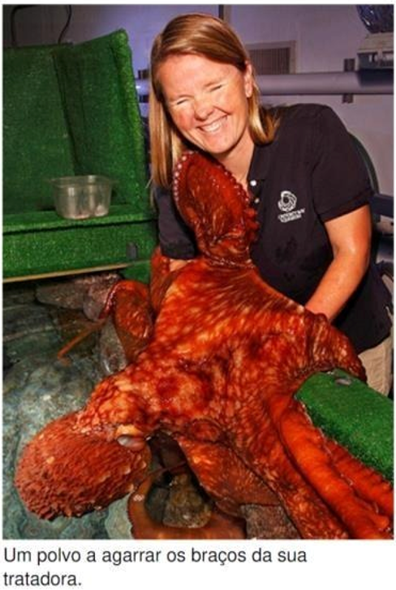
Você completou o simulado PIRLS com sucesso!
Simulado PIRLS - Avaliação de Leitura
Escola Municipal Celestina Scolaro Foggiatto © 2026
Insira as respostas corretas. O sistema fará a correção automática com base nestes valores.
Este painel contém relatórios de turmas e é restrito a professores. Digite a senha para acessar: